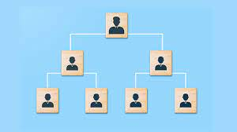

¿Qué es un organigrama RRHH?
Un organigrama RRHH es una representación visual que muestra la estructura jerárquica y funcional del área de
Recursos Humanos dentro de una organización.
Sirve para identificar los diferentes puestos, niveles jerárquicos, relaciones de dependencia y flujos de
comunicación. No es solo un dibujo bonito: es una herramienta clave para tomar decisiones de gestión, desarrollo
organizacional y alineación con la estrategia del negocio.
Beneficios de un organigrama bien diseñado:
Clarifica funciones y responsabilidades.
Facilita la comunicación interna.
Mejora la coordinación entre equipos.
Ayuda a identificar gaps o solapamientos de funciones.
Impulsa la planificación de carrera y el desarrollo del talento.
Un organigrama RRHH efectivo es aquel que no se queda estático: evoluciona con la empresa.
Principales funciones del departamento de RRHH
Antes de conocer los cargos y tipos de organigrama en RRHH, es importante identificar las funciones que justifican
su estructura:
Reclutamiento y selección de personal
Formación y desarrollo profesional
Gestión de la relación laboral
Evaluación del desempeño
Administración de nómina y beneficios
Cultura organizacional y clima laboral
Prevención de riesgos laborales
Gestión del cambio y digitalización
Cargos más comunes en un organigrama de RRHH
La complejidad del organigrama dependerá del tamaño y estructura de la empresa, pero los siguientes son algunos
de los cargos más habituales:
- Director/a de Recursos Humanos
Responsable de definir la estrategia global del área, alineándola con los objetivos de negocio. Supervisa todas
las funciones del departamento. Define la visión de RRHH, impulsa iniciativas clave (cultura, liderazgo,
retención, etc.) y es el nexo entre la dirección general y las personas.
- Manager de RRHH
Encargada/o de coordinar y gestionar las operaciones diarias, reportando directamente al director/a.
- Responsable de delección o Talent Acquisition Manager
Encargado/a de atraer y contratar talento alineado con los valores y objetivos de la empresa. Gestiona procesos
de reclutamiento, employer branding y proceso de onboarding.
- Responsable de Formación y desarrollo
Diseña e implementa programas de formación, planes de carrera, evaluación de desempeño y desarrollo del
liderazgo.
- Técnico/a de Administración de personal
Perfil operativo que da soporte en tareas administrativas, contratos, gestión de bajas, control de horas, etc.
Se encarga de contratos, nóminas, altas y bajas, y relación con Seguridad Social.
- Responsable de Prevención de Riesgos Laborales (PRL)
Vela por la salud y seguridad en el entorno laboral, coordina auditorías y protocolos de seguridad.
- HR Business Partner
Actúa como nexo entre RRHH y las distintas áreas del negocio, con una visión más estratégica y transversal.
Tiene un rol de consultor/a interno de los managers. Traduce las necesidades del negocio en acciones de RRHH
personalizadas.

Tipos de organigrama para Recursos Humanos
- Organigrama funcional
Organiza el departamento por funciones específicas (selección, formación, administración, etc.). Es el más
habitual y suele utilizarse en empresas medianas con especialización interna.
- Organigrama jerárquico
Representa la cadena de mando de manera vertical, desde la dirección hasta los técnicos/as. Muy últil para
empresas grandes o más tradicionales
- Organigrama matricial
Combina dos estructuras (por ejemplo, funcional y por proyectos). Es ideal para organizaciones más flexibles o
empresas tecnológicas que trabajan en entornos cambiantes.
- Organigrama circular
Diseñado para culturas más horizontales. Reduce los niveles jerárquicos y favorece la colaboración. Suele verse
en startups o empresas con filosofía agile.
TABLA
|
Nombre
|
Apellido
|
Cedula
|
Cargo
|
|
JC Endara
|
1710537869
|
GERENTE
|
|
JC
|
Endara2
|
1710537869
|
ADMINISTRADORES
|
|
JC
|
Endara3
|
1710537869
|
Inicio